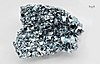

osmium

Definition: Osmium (from Ancient Greek ὀσμή (osmḗ) 'smell') is a chemical element with the symbol Os and atomic number 76. It is a hard, brittle, bluish-white transition metal in the platinum group that is found as a trace element in alloys, mostly in platinum ores. Osmium is the densest naturally occurring element. When experimentally measured using X-ray crystallography, it has a density of 22.59 g/cm3. Manufacturers use its alloys with platinum, iridium, and other platinum-group metals to make fountain pen nib tipping, electrical contacts, and in other applications that require extreme durability and hardness.Osmium is among the rarest elements in the Earth's crust, making up only 50 parts per trillion (ppt). It is estimated to be about 0.6 parts per billion in the universe and is therefore the rarest precious metal.
Source: Wikipedia
Wikipedia Page
Wikidata Page